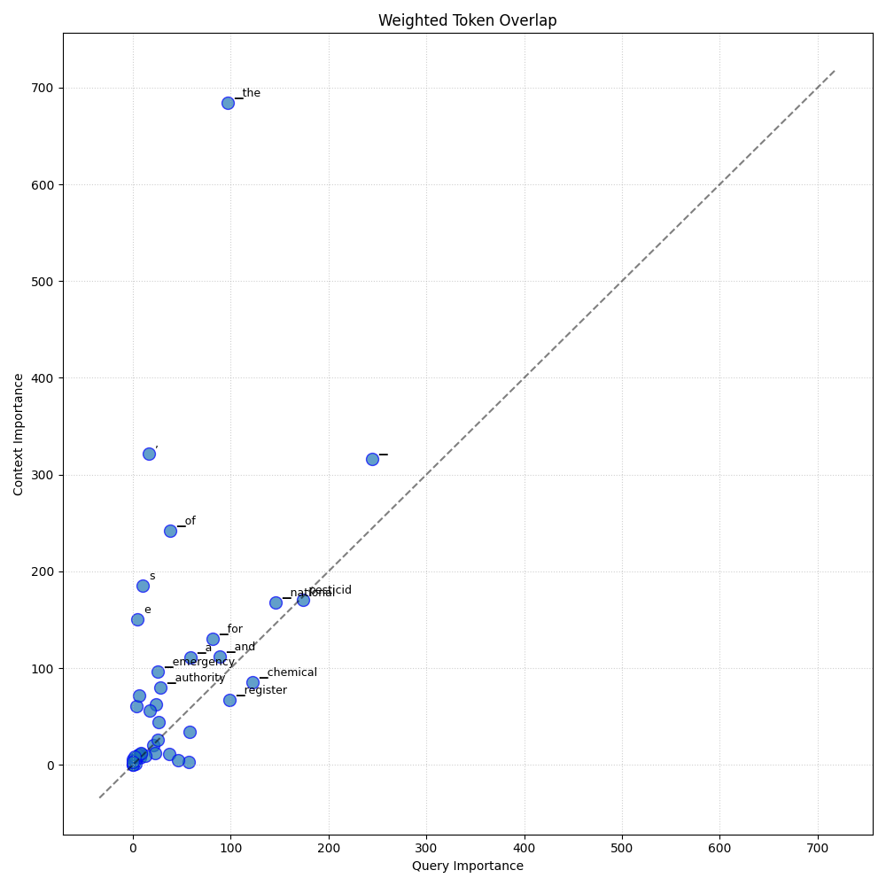
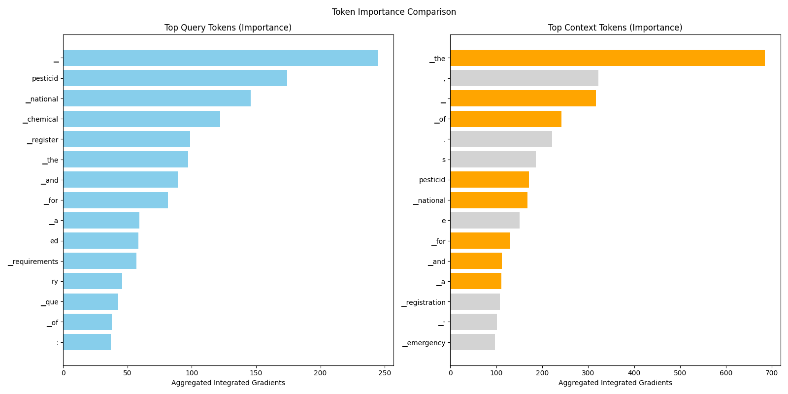

Analysis: query_65
Query: ▁query:▁What▁are▁the▁procedures▁and▁requirements▁for▁obtaining▁a▁National▁Register▁for▁chemical▁pesticides▁in▁the▁context▁of▁a▁phytosanitary▁emergency,▁and▁how▁does▁the▁Competent▁National▁Authority▁manage▁the▁import▁and▁use▁of▁unregistered▁pesticides▁during▁such▁emergencies?
Document Relevance

Weighted Overlap

Token Comparison

Documents
Document 1 (Click to Expand)
▁-▁In▁officially▁declared▁phytosanitary▁emergencies,▁the▁Competent▁National▁Authority,▁in▁coordination▁with▁health▁and▁environmental▁authorities,▁may▁authorize▁the▁import,▁production,▁formulation▁and▁use▁of▁chemical▁pesticides▁for▁agricultural▁use▁not▁registered▁in▁the▁country,▁only▁for▁the▁crop-pest▁combination▁that▁is▁the▁object▁of▁the▁emergency▁and▁for▁as▁long▁as▁the▁situation▁persists.▁The▁destination▁of▁unused▁quantities▁shall▁be▁decided▁by▁the▁abovementioned▁authorities.▁Each▁country▁will▁collect▁and▁evaluate▁the▁information▁necessary▁to▁make▁the▁corresponding▁decision▁in▁relation▁to▁the▁phytosanitary▁emergency.▁The▁Competent▁National▁Authority▁shall▁send▁to▁the▁General▁Secretariat,▁as▁soon▁as▁possible,▁a▁copy▁of▁the▁emergency▁declaration▁and▁the▁list▁of▁import▁authorizations,▁for▁the▁knowledge▁of▁the▁other▁Member▁Countries.▁##▁CHAPTER▁VI▁##▁THE▁NATIONAL▁REGISTER▁OF▁CHEMICAL▁PESTICIDES▁FOR▁AGRICULTURAL▁USE▁##▁Section▁I▁##▁THE▁OBLIGATORY▁NATURE▁OF▁THE▁REGISTRATION▁##▁Article▁-▁Any▁person▁interested▁in▁carrying▁out▁the▁activities▁of▁manufacture,▁formulation,▁import,▁export,▁packaging▁or▁distribution▁of▁a▁chemical▁pesticide▁for▁agricultural▁use▁in▁Member▁Countries,▁which▁has▁complied▁with▁the▁provisions▁of▁Article▁10▁of▁this▁Decision,▁shall▁obtain▁the▁registration▁of▁the▁product▁or▁have▁authorization▁from▁its▁owner,▁for▁this▁purpose.▁For▁all▁imports▁of▁finished▁pesticides▁or▁technical▁grade▁active▁ingredients,▁the▁importer▁must▁also▁have▁the▁import▁authorization▁granted▁by▁the▁Competent▁National▁Authority.▁The▁granting▁or▁denial▁of▁the▁authorization▁will▁be▁dealt▁with▁within▁a▁period▁of▁no▁more▁than▁five▁(5)▁working▁days▁from▁the▁filing▁date.▁##▁Section▁II▁##▁REGISTRATION▁REQUIREMENTS▁##▁Article▁-▁The▁National▁Registry▁shall▁be▁granted▁to▁the▁formulation▁that▁complies▁with▁the▁requirements▁applicable▁to▁it▁in▁the▁context▁of▁the▁provisions▁of▁this▁Decision.▁##▁Article▁-▁To▁obtain▁the▁National▁Register▁of▁a▁chemical▁pesticide▁for▁agricultural▁use,▁the▁natural▁or▁legal▁person▁shall▁submit▁to▁the▁Competent▁National▁Authority▁an▁application▁in▁accordance▁with▁the▁format▁shown▁in▁Annex▁3a,▁attaching▁to▁it▁the▁data▁applicable▁to▁the▁technical▁requirements▁indicated▁in▁Annex▁2▁of▁this▁Decision,▁in▁accordance▁with▁the▁provisions▁of▁the▁Technical▁Manual.▁##▁Article▁-▁The▁Competent▁National▁Authority▁shall▁grant▁the▁National▁Registration▁Certificate▁of▁a▁chemical▁pesticide▁for▁agricultural▁use▁in▁the▁manner▁presented▁in▁the▁format▁of▁Annex▁3b,▁when▁the▁results▁of▁the▁evaluation▁demonstrate▁that▁the▁benefits▁outweigh▁the▁risks▁involved▁in▁the▁use▁of▁the▁pesticide.▁##▁Article▁-▁Formulations▁with▁the▁same▁product▁name▁may▁not▁be▁registered▁if▁they▁have▁different▁active▁ingredients.
Document 2 (Click to Expand)
▁-▁As▁a▁preliminary▁step▁for▁the▁commercial▁registration▁of▁a▁chemical▁pesticide▁for▁agricultural▁use▁that▁is▁produced▁in▁or▁enters▁a▁Member▁Country▁for▁the▁first▁time,▁the▁Competent▁National▁Authority▁may▁authorize▁the▁import▁and▁use▁of▁limited▁quantities▁of▁the▁same▁to▁carry▁out▁experimental▁efficacy▁tests.▁The▁permit▁granted▁for▁this▁purpose▁shall▁be▁framed▁within▁specific▁protocols▁approved▁by▁that▁authority,▁which▁shall▁supervise▁the▁conduct▁of▁the▁trials.▁In▁case▁of▁institutional▁competition,▁the▁Competent▁National▁Authority▁will▁coordinate▁the▁granting▁of▁this▁permit▁with▁the▁health▁and▁environment▁sectors.▁The▁following▁information▁must▁be▁submitted▁with▁the▁permit▁application:▁-▁Name,▁address▁and▁identity▁of▁the▁permit▁applicant.▁-▁Name,▁address▁and▁identifying▁data▁of▁the▁manufacturer,▁formulator▁or▁importer.▁-▁Name▁of▁the▁product,▁if▁any.▁-▁Common▁name▁of▁the▁pesticide.▁-▁Chemical▁name.▁-▁Structural▁formula.▁-▁Chemical▁composition:▁active▁ingredients▁and▁additives▁(description▁and▁content).▁-▁Physical▁and▁chemical▁characteristics.▁-▁Type▁of▁formulation.▁-▁Quantity▁of▁product▁required▁or▁to▁be▁imported.▁-▁Efficacy▁test▁protocol,▁in▁accordance▁with▁the▁provisions▁of▁the▁Technical▁Manual.▁-▁Indications▁for▁acute▁oral,▁dermal▁and▁inhalation▁toxicity,▁90-day▁subchronic▁toxicity▁and▁chronic▁toxicity,▁and▁mutagenesis▁tests,▁minimum▁2;▁neurotoxicity▁where▁applicable.▁-▁Information▁on▁ecotoxicity▁of▁the▁product,▁acute▁toxicity▁in▁birds,▁aquatic▁organisms▁and▁bees.▁-▁Information▁on▁basic▁studies▁of▁residuality,▁degradability▁and▁persistence.▁-▁Precautions▁for▁use.▁-▁Protection▁elements▁for▁the▁handling▁and▁health▁controls▁of▁the▁applicators.▁-▁Treatment▁and▁disposal▁of▁waste▁and▁residues.▁-▁Form▁of▁elimination▁of▁treated▁crops.▁-▁Recommendations▁for▁the▁doctor▁and▁treatments.▁The▁experimental▁permit▁shall▁be▁issued▁within▁a▁maximum▁of▁thirty▁(30)▁working▁days▁of▁receipt▁of▁all▁the▁information▁requested.▁This▁permit▁shall▁be▁valid▁for▁one▁year▁and▁may▁be▁renewed▁for▁an▁equal▁period,▁by▁means▁of▁a▁justified▁request▁that▁must▁be▁submitted▁thirty▁(30)▁working▁days▁before▁its▁expiration.▁Each▁Member▁Country▁shall▁determine▁the▁conditions▁and▁procedures▁for▁the▁issuance▁of▁permits▁for▁experimentation.▁##▁Section▁III▁##▁PHYTOSANITARY▁EMERGENCIES▁##▁Article▁-▁In▁officially▁declared▁phytosanitary▁emergencies,▁the▁Competent▁National▁Authority,▁in▁coordination▁with▁health▁and▁environmental▁authorities,▁may▁authorize▁the▁import,▁production,▁formulation▁and▁use▁of▁chemical▁pesticides▁for▁agricultural▁use▁not▁registered▁in▁the▁country,▁only▁for▁the▁crop-pest▁combination▁that▁is▁the▁object▁of▁the▁emergency▁and▁for▁as▁long▁as▁the▁situation▁persists.
Document 3 (Click to Expand)
▁##▁THE▁COMPULSORY▁REGISTRATION▁OF▁MANUFACTURERS,▁FORMULATORS,▁IMPORTERS,▁EXPORTERS,▁PACKAGERS▁AND▁DISTRIBUTORS▁##▁Article▁-▁Manufacturers,▁formulators,▁importers,▁exporters,▁packagers▁and▁distributors▁of▁chemical▁pesticides▁for▁agricultural▁use,▁whether▁natural▁or▁legal▁persons,▁must▁be▁registered▁with▁the▁Competent▁National▁Authority.▁The▁manufacture,▁formulation,▁import,▁export,▁packaging▁and▁distribution▁of▁chemical▁pesticides▁for▁agricultural▁use▁may▁only▁be▁made▁by▁natural▁persons▁or▁legal▁entities▁that▁have▁the▁respective▁registration▁granted▁by▁the▁Competent▁National▁Authority▁in▁compliance▁with▁the▁provisions▁of▁this▁Article.▁##▁Article▁-▁For▁purposes▁of▁the▁registration▁referred▁to▁in▁the▁previous▁article,▁the▁interested▁party▁shall▁submit▁the▁following▁information▁to▁the▁Competent▁National▁Authority▁for▁verification:▁1.▁Name,▁address▁and▁identification▁data▁of▁the▁natural▁or▁legal▁person▁and▁its▁legal▁representative.▁2.▁Location▁of▁plants▁or▁factories,▁warehouses▁and▁warehouses.▁3.▁Description▁of▁the▁facilities▁and▁equipment▁available▁for▁the▁manufacture,▁formulation▁or▁packaging,▁storage,▁handling▁and▁disposal▁of▁waste,▁as▁the▁case▁may▁be.▁4.▁Proof▁that▁you▁have▁your▁own▁laboratory▁or▁that▁you▁have▁the▁services▁of▁a▁laboratory▁recognized▁by▁the▁Competent▁National▁Authority▁or▁accredited▁for▁quality▁control▁of▁products.▁5.▁Copy▁of▁the▁license,▁permit▁or▁authorization▁from▁the▁national▁health▁and▁environmental▁agency,▁or▁from▁the▁authorities▁acting▁in▁their▁place.▁6.▁In▁all▁applicable▁cases,▁the▁registrant▁should▁include▁occupational▁health▁programs.▁7.▁Name▁of▁the▁responsible▁technical▁advisor,▁with▁tuition▁or▁equivalent.▁Article▁-▁The▁registration▁shall▁be▁valid▁indefinitely▁and▁shall▁be▁subject▁to▁periodic▁evaluations▁by▁the▁Competent▁National▁Authority,▁which▁may▁suspend▁or▁cancel▁it▁when▁the▁conditions▁that▁gave▁rise▁to▁its▁granting▁are▁not▁complied▁with▁or▁modified.▁##▁CHAPTER▁V▁##▁OF▁SPECIAL▁PERMITS▁##▁Section▁I▁##▁FOR▁RESEARCH▁##▁Article▁-▁The▁import▁into▁the▁countries▁of▁the▁Andean▁Subregion▁of▁codified▁substances▁in▁the▁development▁phase▁for▁research▁purposes▁on▁chemical▁pesticides▁for▁agricultural▁use▁is▁prohibited,▁as▁long▁as,▁in▁the▁opinion▁of▁the▁Competent▁National▁Authority,▁the▁indispensable▁national▁capacities▁and▁regulations▁do▁not▁exist▁to▁ensure▁that▁risks▁to▁health▁and▁the▁environment▁are▁minimized.▁The▁Competent▁National▁Authority▁shall▁inform▁the▁General▁Secretariat▁in▁a▁reasoned▁manner,▁and▁the▁General▁Secretariat▁shall▁inform▁the▁other▁Member▁Countries.▁##▁Section▁II▁##▁FOR▁EXPERIMENTATION▁##▁Article